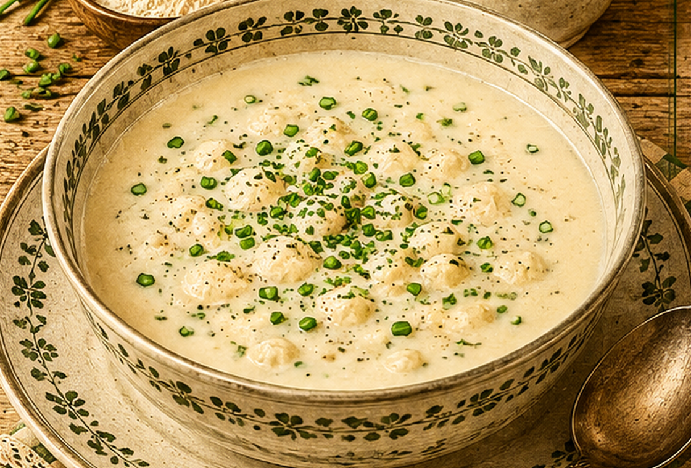

Buttermilchsuppe
Eine milde Buttermilchsuppe mit Hirse, Zimt und gedörrten Zwetschen.

Originale Überlieferung
Die Handschrift nennt zwei Liter Buttermilch, etwa 60 g Hirse, Salz, Zimt und gedörrte Zwetschen. Die Hirse und die Zwetschen werden getrennt gegart und anschließend mit der warmen Buttermilch vereinigt.
Moderne Übertragung
Hirse und Trockenpflaumen werden separat weich gekocht. Die Buttermilch wird vorsichtig mit Salz und Zimt erwärmt und mit den Einlagen zusammengeführt, ohne sie stark aufzukochen.
Zutaten
- 2 l Buttermilch
- 60 g Hirse
- 8 gedörrte Zwetschen
- 1 Prise Salz
- etwas Zimt
- Wasser zum Garen
Zubereitung
- Hirse waschen und in Wasser weich garen.
- Die gedörrten Zwetschen separat in wenig Wasser weich kochen.
- Buttermilch mit Salz und Zimt langsam erwärmen, aber nicht sprudelnd kochen.
- Hirse und Zwetschen samt etwas Kochwasser in die Buttermilch geben.
- Kurz durchziehen lassen und warm servieren.